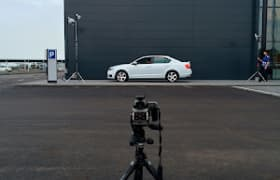

Прыгать или нет? Напишите в комментарии свой совет и смотрите прямую трансляцию в перископе, задавайте свои вопросы!
Фотографии
пользователей
Взгляните на фотографии, которые выкладывают пользователи! Видите, как не хватает ваших?
 Вчера он на луну летал, сегодня в руки к нам попал.
Соседи будут рады!

Здесь могла быть ваша цитата о высоком и вечном.

Самая кубанская в мире!
Где снег-то?

Всем GM и взаимные лайки!
Поделиться своей фотографией.
Затмите их всех!
Выкладывайте все, что накопилось в телефоне!